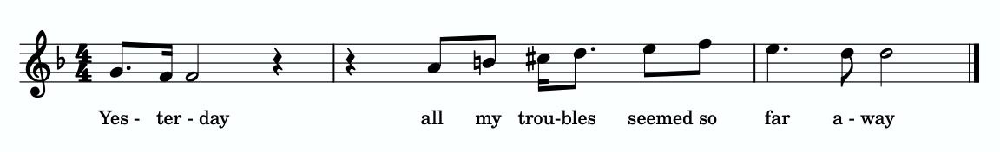
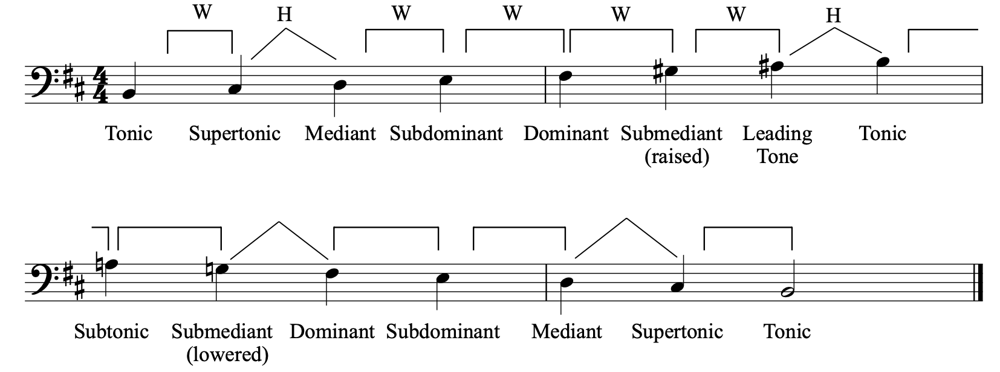
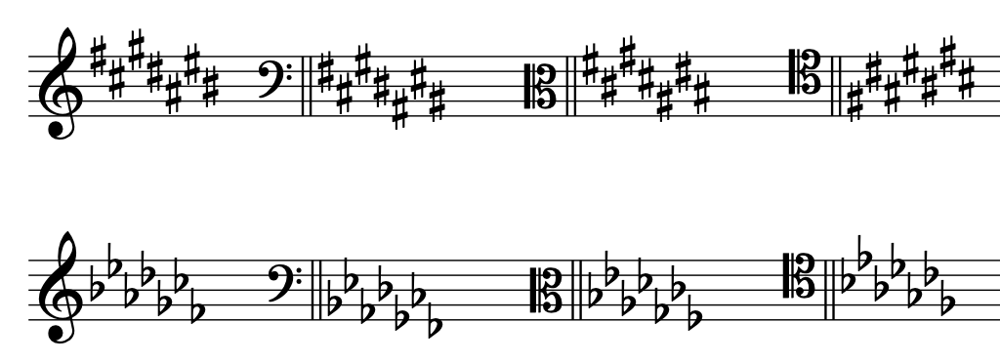

Open Music Theory：繁體中文版
小音階、音階級數與調號
重點整理
- 小音階的第三個音，一定比同主音大音階的第三個音低半音。
- 小音階有三種形式：自然小音階、和聲小音階與旋律小音階。
- 各種小音階的半音與全音依下列順序排列：
- 自然小音階：W–H–W–W–H–W–W（上行）。
- 和聲小音階：W–H–W–W–H–3Hs–H（上行）。
- 旋律小音階：W–H–W–W–W–W–H（上行），W–W–H–W–W–H–W（下行）。
- 雖然小音階有三種形式，小調及其調號仍只稱為「小調」（例如 A 小調、D 小調），調號以自然小音階為依據。
- 小調的音階級數與大調相同；唱名則增加了 me、le、te 等音節。
- 小音階中的各音也有各自的音級名稱，大致與大調相同，但多了下主音（te，或 [latex]\hat7[/latex]）。
- 大調與小調之間有兩種關係：主音相同的是同主音調；調號相同的是關係調。
- 每個大調調號都有相對應的關係小調調號；關係小調的主音比關係大調的主音低三個半音。大調與小調的升、降記號排列順序相同。
查看英文原文
Key Takeaways
- A minor scale's third note is always a half step lower than the third note of the major scale with the same name.
- There are three variations on the minor scale: natural minor, harmonic minor, and melodic minor.
- Each minor scale is an ordered collection of half and whole steps, as follows:
- Natural minor: W‑H‑W‑W‑H‑W‑W (ascending)
- Harmonic minor: W‑H‑W‑W‑H‑3Hs‑H (ascending)
- Melodic minor: W‑H‑W‑W‑W‑W‑H (ascending) and W‑W‑H‑W‑W‑H‑W (descending).
- While there are three minor scales, minor keys and minor key signatures are always identified as simply "minor" ("A minor," "D minor," etc.) and are based on the natural minor scale.
- Scale degrees in minor are the same as those in major. There are a few new solfège syllables in minor including me, le, and te.
- Each note of a minor scale is also named with scale-degree names. These are largely the same in minor as they are in major, except for the subtonic (te or [latex]\hat7[/latex]).
- Major and minor keys share two different relationships. The parallel relationship is when a major and minor key share a tonic note, while the relative relationship is when a major and minor key share a key signature.
- Each major key signature has a corresponding relative minor key signature whose tonic is three half steps below the relative major's tonic. The orders of sharps and flats in major and minor key signatures are the same.
小音階的第三個音，一定比同名大音階的第三個音低半音，例如 B 大音階與 B 小音階。小音階有三種形式：自然小音階、和聲小音階與旋律小音階。可以把它們想成不同口味的冰淇淋：不論是巧克力、香草還是草莓，仍然是冰淇淋。同樣地，一首作品只會被稱為「小調作品」或「採用小調」；音樂家不會說作品「在」某一種特定的小音階之中（自然、和聲或旋律小音階）。也就是說，雖然小音階有三種形式，小調及其調號仍只稱為「小調」（例如 A 小調、D 小調），調號以自然小音階為依據。
這三種小音階的分類，主要對器樂演奏者有幫助。在樂器上練習不同形式的小音階，可以熟悉西方古典音樂中最常用的小調音型。和大音階一樣，小音階依第一個音命名（若有變音記號，也要包含在名稱中），最後一個音也與起音同名。
譯註來源：The Beatles：Yesterday 官方歌曲資料

譜例 2。保羅・麥卡尼與約翰・藍儂〈Yesterday〉；請從 0:05 開始聆聽。
西方音樂常用小調表達悲傷等負面情緒，但並非總是如此！因此，原文認為〈Yesterday〉描寫分手後深受打擊的心情，採用小調十分貼切。
譯註來源：Musicnotes：Yesterday 原調聲樂譜資料（MN0200169）
查看英文原文
The Minor Scale
A minor scale's third note is always a half step lower than the third note of the major scale with the same name (e.g., B major and B minor). There are three different types of minor scales: natural minor, harmonic minor, and melodic minor. These three types of minor scales should be thought of like flavors of ice cream; ice cream is still ice cream regardless of whether it is chocolate, vanilla, strawberry, etc. Likewise, a work is simply "minor" or "in minor;" musicians do not consider music to be "in" a specific type of minor scale (i.e., natural, harmonic, or melodic). In other words, while there are three minor scales, minor keys and minor key signatures are always identified as simply "minor" ("A minor," "D minor," etc.) and are based on the natural minor scale.
The three different types of minor scales are useful categories primarily for instrumental performers. Learning to play the different types of minor scales on instruments allows performers to become familiar with the minor patterns most commonly used in Western classical music. Just like major scales, minor scales are named for their first note (including the accidental, if any), which is also their last note.
Like major scales, minor scales are very common in many different genres in music. One example of a minor scale (see Melodic Minor below) can be heard in the Beatles's “Yesterday” (1964). Example 1 shows an excerpt from the beginning of this song:
You can listen to the music in Example 1 starting at 0:05 in Example 2. Listen for the ascending minor scale in the voice:
Example 2."Yesterday" by Paul McCartney and John Lennon; listen starting at 0:05.
Minor is often (but not always!) used to depict negative emotions, such as sadness, in Western music. It is therefore appropriate that "Yesterday," which is about a breakup which has left the speaker devastated, is in a minor key.
自然小音階的半音與全音，上行依 W–H–W–W–H–W–W 排列，如譜例 3所示。每個全音以方形括線與「W」標示，每個半音則以折角括線與「H」標示。仔細聆聽譜例 3，注意自然小音階上行與下行所使用的半音、全音關係相同。
譜例 3。G 自然小音階。（實際播放的音階為 F 自然小音階。）
以下練習可幫助你辨識自然小音階中的全音與半音：
以下練習可幫助你辨識自然小音階的名稱：
查看英文原文
Natural Minor
The natural minor form of the minor scale consists of an ordered collection of half and whole steps with the ascending succession W‑H‑W‑W‑H‑W‑W, as shown in Example 3. Each whole step is labeled with a square bracket and “W,” and each half step is labeled with an angled bracket and “H.” Listen carefully to Example 3 and notice that the half and whole step pattern of the natural minor form of the minor scale is the same ascending and descending.
Example 3. A G natural minor scale. (Sounding scale is F natural minor.)
You can practice identifying whole and half steps in a natural minor scale in the following exercise:
You can practice identifying the names of natural minor scales in the following exercise:
和聲小音階的音程，上行依 W–H–W–W–H–3Hs–H 排列（「3Hs」表示三個半音），如譜例 4所示。弧形括線表示三個半音的距離，也就是一個全音加上一個半音。仔細聆聽譜例 4，注意和聲小音階上行與下行所使用的音程關係相同。
譜例 4。G 和聲小音階。（實際播放的音階為 F 和聲小音階。）
查看英文原文
Harmonic Minor
The harmonic minor form of the minor scale consists of an ordered collection of half and whole steps in the ascending succession W‑H‑W‑W‑H‑3Hs‑H (“3Hs” = 3 half steps), as shown in Example 4. The curved bracket represents a distance of three half steps (or a whole step plus a half step). Listen carefully to Example 4 and notice that the half and whole step pattern of the harmonic minor form of the minor scale is the same ascending and descending.
Example 4. A G harmonic minor scale. (Sounding scale is F harmonic minor.)
旋律小音階的半音與全音，上行依 W–H–W–W–W–W–H 排列，下行則依 W–W–H–W–W–H–W 排列，如譜例 5所示。聆聽譜例 5時，注意旋律小音階的上行與下行模式不同：上行採用旋律小音階特有的排列，下行則與自然小音階相同。
譜例 5。G 旋律小音階。（實際播放的音階為 F 旋律小音階。）
查看英文原文
Melodic Minor
The melodic minor form of the minor scale consists of an ordered collection of half and whole steps in the ascending succession W‑H‑W‑W‑W‑W‑H and the descending succession W‑W‑H‑W‑W‑H‑W, as shown in Example 5. When you listen to Example 5, notice that the melodic minor form has different ascending and descending patterns: the ascending pattern is unique to the melodic minor form, while the descending pattern is the same as the natural minor form.
Example 5. A G melodic minor scale. (Sounding scale is F melodic minor.)
Example 6 shows four versions of a C scale—major, natural minor, harmonic minor, and melodic minor—with the scale degrees indicated. Listen to this example carefully, noting the aural differences between the scales.
小音階的音階級數、唱名與音級名稱，與大音階相似，但不完全相同。譜例 7整理三種小音階，並標出各自的音階級數與唱名。請注意，音階級數與大音階相同。最下方的唱名有幾處與大音階不同，以反映小音階的全音、半音排列。
譜例 7。三種小音階的音階級數與唱名：（a）自然小音階、（b）和聲小音階、（c）旋律小音階。
自然小音階的唱名（譜例 7a）中，mi 改為 me（讀音如英語 may），la 改為 le（如 lay），ti 改為 te（如 tay）。唱或演奏上面的譜例時，你會發現結尾沒有大音階那樣的收束感。大音階的收束感，部分來自 ti（[latex]\uparrow\hat{7}[/latex]）到 do（[latex]\hat{1}[/latex]）之間的上行半音。
和聲小音階（譜例 7b）以 ti（[latex]\uparrow\hat7[/latex]）取代 te（[latex]\hat7[/latex]）。ti（[latex]\hat{7}[/latex]）帶來了自然小音階所欠缺的收束感。
如前所述，旋律小音階的上行與下行模式不同（譜例 7c）。上行時，le–te（[latex]\hat6-\hat7[/latex]）改為 la–ti（[latex]\uparrow\hat6-\uparrow\hat7[/latex]），因此旋律小音階的上半部聽起來和大音階相同。下行時恢復自然小音階，所以再度使用 te–le（[latex]\hat7-\hat6[/latex]）。因此，上行旋律小音階具有類似大音階的收束感，下行則遵循自然小音階的排列。
以下練習可幫助你標示自然小音階的唱名：
| 音階級數 | 唱名 | 音級名稱 |
|---|---|---|
| [latex]\hat1[/latex] | do | 主音 |
| [latex]\hat2[/latex] | re | 上主音 |
| [latex]\hat3[/latex] | me | 中音 |
| [latex]\hat4[/latex] | fa | 下屬音 |
| [latex]\hat5[/latex] | sol | 屬音 |
| [latex]\hat6[/latex] | le | 下中音 |
| [latex]\hat7[/latex] | te | 下主音 |
| [latex]\uparrow\hat7[/latex] | ti | 導音 |
譜例 8。小音階中的音級名稱。
大音階章曾說明，拉丁文前綴 sub 意為「下方」：下中音位於主音下方三度，下屬音則位於主音下方五度。現在可以再加入一個音級名稱：下主音，指降低的 [latex]\downarrow\hat7[/latex]。上主音比主音高一個全音，下主音則比主音低一個全音。
譜例 9顯示 B 旋律小音階的上行與下行，並標出音級名稱。如圖所示，旋律小音階上行時使用導音，下行時使用下主音。

- W：全音；
- H：半音。
- Tonic：主音；
- Supertonic：上主音；
- Mediant：中音；
- Subdominant：下屬音；
- Dominant：屬音；
- Submediant：下中音；
- Leading Tone：導音；
- Subtonic：下主音。
- raised：升高；
- lowered：降低。
譜例 10可幫助你理解三種小音階。表中的順序依據是：與同主音大音階相比，有幾個音階級數降低。
| 小音階形式 | 相較於大音階降低的級數 |
|---|---|
| 自然小音階 | [latex]\downarrow\hat{3},\downarrow\hat{6}, \downarrow\hat{7}[/latex] |
| 和聲小音階 | [latex]\downarrow\hat{3},\downarrow\hat{6}[/latex] |
| 旋律小音階（上行） | [latex]\downarrow\hat{3}[/latex] |
譜例 10。小音階中降低的音階級數。
如表所示，相較於大音階，自然小音階有三個級數降低，和聲小音階有兩個，旋律小音階上行時則有一個。請記住，旋律小音階下行與自然小音階相同，都有三個級數降低。
以下練習可幫助你標示小音階的音階級數、唱名與音級名稱：
查看英文原文
Minor Scale Degrees, Solfège, and Scale-Degree Names
Minor scale degrees, solfège, and scale-degree names are similar to, but not exactly the same as, their major-scale counterparts. Example 7 summarizes the three types of minor scale, and shows the scale degrees and solfège for each. Note that the scale degrees are the same as in a major scale. The bottom line shows the solfège syllables, which differ from the major-scale syllables in several places to reflect the minor scale’s pattern of whole and half steps.
Example 7. Scale degrees and solfege for all three types of minor scales: a) natural minor; b) harmonic minor, and c) melodic minor.
In the solfège for natural minor (Example 7a), mi becomes me (pronounced "may"), la becomes le (pronounced "lay"), and ti becomes te (pronounced "tay"). If you sing or play through the above example, you’ll notice that the ending lacks the same sense of closure you heard in the major scale. In the major scale, this closure is created in part by the ascending semitone between ti ([latex]\uparrow\hat{7}[/latex]) and do ([latex]\hat{1}[/latex]).
In harmonic minor (Example 7b), ti ([latex]\uparrow\hat7[/latex]) replaces te ([latex]\hat7[/latex]). Having ti ([latex]\hat{7}[/latex]) creates the sense of closure that is absent in the natural minor scale.
As noted above, the melodic minor scale has different ascending and descending patterns (Example 7c). In the ascending form of melodic minor, le–te ([latex]\hat6-\hat7[/latex]) becomes la-ti ([latex]\uparrow\hat6-\uparrow\hat7[/latex]), meaning the upper half of the melodic minor scale sounds the same as a major scale. In the descending form of melodic minor, natural minor is restored, so te–le ([latex]\hat7-\hat6[/latex]) is used again. Therefore, the ascending version of melodic minor has the sense of closure associated with the major scale, while the descending version follows the pattern of the natural minor scale.
You can practice labeling solfège in a natural minor scale in the following exercise:
As in major scales, each note of a minor scale is also named with scale-degree names. Example 8 shows the scale-degree names used in minor scales alongside the corresponding scale-degree numbers and solfège syllables.
| Scale Degree Number | Solfège | Scale Degree Names |
|---|---|---|
| [latex]\hat1[/latex] | do | Tonic |
| [latex]\hat2[/latex] | re | Supertonic |
| [latex]\hat3[/latex] | me | Mediant |
| [latex]\hat4[/latex] | fa | Subdominant |
| [latex]\hat5[/latex] | sol | Dominant |
| [latex]\hat6[/latex] | le | Submediant |
| [latex]\hat7[/latex] | te | Subtonic |
| [latex]\uparrow\hat7[/latex] | ti | Leading Tone |
Example 8. Scale-degree names in minor scales.
As the chapter on major scales discussed, the Latin prefix sub means “under”—the submediant is a third below the tonic, and the subdominant is a fifth below. To this, we can now add one new scale degree name: the subtonic, for lowered [latex]\downarrow\hat7[/latex]. The supertonic is one whole step above the tonic, while the subtonic is one whole step below the tonic.
Example 9 shows a B melodic minor scale, ascending and descending, with scale-degree names labeled. As you can see, the melodic minor scale utilizes the leading tone in its ascending form, and the subtonic in its descending form.
Example 10 is a helpful visual for learning about the three forms of the minor scale. The order reflects the number of lowered scale degrees compared to a major scale starting on the same note.
| Form of Minor Scale | Lowered Scale Degrees (versus major) |
|---|---|
| Natural | [latex]\downarrow\hat{3},\downarrow\hat{6}, \downarrow\hat{7}[/latex] |
| Harmonic | [latex]\downarrow\hat{3},\downarrow\hat{6}[/latex] |
| Melodic (ascending) | [latex]\downarrow\hat{3}[/latex] |
Example 10. Lowered scale degrees of minor.
As you can see, when compared to major, natural minor scales have three lowered scale degrees, harmonic minor scales have two, and melodic minor scales have one in the ascending version. Remember, the descending version of melodic minor is the same as natural minor, with three lowered scale degrees.
You can practice labeling minor scale degrees, solfège, and scale-degree names in the following exercise:
比較大調與小調時，有兩種重要關係。大調與小調共用同一個主音（do，[latex]\hat{1}[/latex]）時，稱為同主音調關係。例如，C 大調與 C 小調、A♭ 大調與 A♭ 小調、F♯ 大調與 F♯ 小調，都是同主音調。我們用「同主音小調」與「同主音大調」描述這種關係：C 大調是 C 小調的同主音大調，C 小調則是 C 大調的同主音小調。
大調與小調共用同一個調號時，稱為關係調。例如，C 大調的調號沒有升、降記號，A 小調也是如此。我們用「關係小調」與「關係大調」描述這種關係：C 大調是 A 小調的關係大調，A 小調是 C 大調的關係小調。小調主音一定比其關係大調的主音低三個半音：從 C 向下數三個半音，就會到 A（C–B、B–B♭、B♭–A）。同樣地，要找出某個小調的關係大調，就從主音向上數三個半音。
用半音數找關係大調或關係小調時，請記住：關係調必須共用同一個調號。使用升記號的調與使用降記號的調，不能互為關係調；反過來也一樣。因此，必須選擇正確的等音調名。例如，比 D♭ 低三個半音的音，可以寫成 B♭ 或 A♯，但只有 B♭ 小調（五個降記號）是 D♭ 大調（也是五個降記號）的關係小調；A♯ 小調的調號不同，有七個升記號。
查看英文原文
The Parallel and Relative Relationships
When comparing major and minor keys, there are two relationships that are important. The parallel relationship is when a major key shares a tonic (do, [latex]\hat{1}[/latex]) with a minor key. For example, C major and C minor (or A♭ major and A♭ minor, or F♯ major and F♯ minor) are parallel keys. We use the terms "parallel minor" and "parallel major" to describe this relationship: C major is the parallel major of C minor, and C minor is the parallel minor of C major.
The relative relationship is when a major key shares a key signature with a minor key. For example, C major does not have any sharps or flats in its key signature, and neither does A minor. We use the terms "relative minor" and "relative major" to describe this relationship: C major is the relative major of A minor, and A minor is the relative minor of C major. The tonic of a minor key is always three half steps below the tonic of its relative major: if you count three half steps below C, you will get A (C–B, B–B♭, B♭–A). Likewise, to find the relative major key of a given minor key, count three half steps up.
When counting half steps to determine the relative major or minor of a given key, keep in mind that relative keys have the same key signature. A sharp key cannot share a relative relationship with a flat key (and vice versa), which means you need to select the correct enharmonic key. For example, although the pitch three half steps down from D♭ could be written as either B♭ or A♯, only B♭ minor (five flats) is the relative minor of D♭ major (also five flats), because A♯ minor has a different key signature (seven sharps).

- 譜例 12。A、E、B、F♯、C♯、G♯、D♯、A♯ 小調的調號。
{kind=link}
- 譜例 13。A、D、G、C、F、B♭、E♭、A♭ 小調的調號。
{kind=link}
和假想大調一樣，小調若需要重升或重降記號，也可以是本書所稱的假想調。
以下練習可幫助你辨識小調調號：
查看英文原文
Minor Key Signatures
Minor key signatures, like major key signatures, go after a clef but before a time signature. Each major key has a corresponding relative minor key signature; therefore, the orders of the sharps and flats are the same in minor key signatures as they are in major key signatures, placed on the same lines and spaces. Example 11, reproduced from the previous chapter, shows the order of sharps and flats in all four clefs:
As previously mentioned, if you know the major key associated with a given key signature, you can go down three half steps from the tonic to find the minor key for that key signature. Example 12 shows all of the sharp minor key signatures in order, and Example 13 depicts all of the flat minor key signatures in order.
- Example 12. The key signatures of A, E, B, F♯, C♯, G♯, D♯, and A♯ minor.
- Example 13. The minor key signatures of A, D, G, C, F, B♭, E♭, and A♭ minor.
Minor keys can also be imaginary (like imaginary major keys) if they contain double accidentals.
You can practice identifying minor key signatures in the following exercise:

譜例 14以外圈的藍色大寫字母表示大調，內圈的紅色小寫字母表示小調。調號同樣依變音記號數量排列。從頂端（十二點鐘位置）順時針移動，升記號會依序增加；從頂端逆時針移動，降記號會依序增加。底部三個位置的調號可以用升記號或降記號記寫，因此各有一對等音調。
查看英文原文
Minor Keys and the Circle of Fifths
The circle of fifths can be used as a visual for minor key signatures as well as major key signatures. Each key signature is placed alongside the corresponding major and minor keys. Example 14 shows the circle of fifths for minor and major keys:
In Example 14, major keys are in blue uppercase letters around the outside of the circle, while minor keys are in red lowercase letters around the inside of the circle. Once again, key signatures appear in order of their number of accidentals. If you start at the top of the circle (12 o'clock) and continue clockwise, key signatures add sharps, while if you start at the top of the circle and continue counterclockwise, they add flats. The bottom three key signatures can be written in sharps or flats, and so are enharmonic.
拿到要演奏或演唱的樂譜時，譜上通常會有調號，可將作品的調性範圍縮小為兩種選擇：某個大調，或它的關係小調。[1]但要怎麼判斷是哪一種？可以聆聽並觀察前後文的線索，例如作品的第一個音與最後一個音。作品常從主音開始，也常在主音結束，因此這些音能幫助判斷是大調還是小調。
譜例 15是路易絲・賴夏特（Louise Reichardt，1779–1826）的歌曲〈Durch die bunten Rosenhecken〉（穿過繽紛的玫瑰籬）的前三小節：
{kind=link}
Unruhig und klagend：不安而哀怨地。
譜中歌詞意為：蝴蝶穿過繽紛的玫瑰籬，翩翩飛舞。
這個譜例包含聲樂旋律（最上方的一行譜）與鋼琴聲部（聲樂下方的大譜表）。調號有四個降記號，因此可以將調性範圍縮小為 A♭ 大調或 F 小調。譜例 15最高聲部（歌者）圈出的第一個音是 F，最低聲部（鋼琴彈奏的最低音）圈出的第一個音也是 F。因此，這首作品較可能是 F 小調，而非 A♭ 大調。
- Drabkin, William。2001。〈Circle of Fifths〉（五度圈）。Grove Music Online。https://doi.org/10.1093/gmo/9781561592630.article.05806。
- 同作者。2001。〈Degree〉（音階級數）。Grove Music Online。https://doi.org/10.1093/gmo/9781561592630.article.07408。
- 同作者。2001。〈Scale〉（音階）。Grove Music Online。https://doi.org/10.1093/gmo/9781561592630.article.24691。
- Hyer, Brian。2001。〈Tonality〉（調性）。Grove Music Online。https://doi.org/10.1093/gmo/9781561592630.article.28102。
- Jander, Owen。2001。〈Solfeggio〉（視唱）。Grove Music Online。https://doi.org/10.1093/gmo/9781561592630.article.26144。
- McGrain, Mark。1986。Music Notation（音樂記譜法）。波士頓：Berklee Press。
- Palmer, Willard A. 等。1994。The Complete Book of Scales, Chords, Arpeggios & Cadences（音階、和弦、琶音與終止式全書）。加州 Van Nuys：Alfred Publishing。
- Rechberger, Herman。Scales and Modes around the World（世界各地的音階與調式）。2008。芬蘭：Fennica-Gehrman。
- Roemer, Clinton。1985。The Art of Music Copying: The Preparation of Music for Performance（抄譜的藝術：為演出準備樂譜），第 2 版。Sherman Oaks：Roerick Music Company。
媒體出處與授權
- 〈披頭四「Yesterday」〉© Paul McCartney 與 John Lennon；原頁標示為 CC BY-SA（姓名標示—相同方式分享）授權。
- 〈小音階音級名稱〉© Chelsey Hamm，採用 CC BY-SA（姓名標示—相同方式分享）授權。
- 〈不同譜號中的升、降記號〉© Chelsey Hamm，採用 CC BY-SA（姓名標示—相同方式分享）授權。
- 〈小調五度圈〉© Wiki Commons，由 Bryn Hughes 改編，採用 CC BY-SA（姓名標示—相同方式分享）授權。
- 〈Durch die bunten Rosenhecken〉© Louise Reichardt，原頁標示為公眾領域。
查看英文原文
Major or Minor?
When you are given a piece of music to play or sing, the notation will often include a key signature, which will help you to narrow down the key of the work to two options: a major key and its relative minor.[1] But how can you tell which one the work is in? One thing that can help is to listen to and look at context clues. One type of such clues are the first and last notes of the work—pieces often start and end on the tonic, so this can help you determine whether a work is major or minor.
Example 15 shows the first three measures of a song by Louise Reichardt (1779–1826) titled "Durch die bunten Rosenhecken" ("Through the colorful rose hedges"):
This example shows a vocal line (the top staff) and a piano part (the grand staff underneath the vocal part). The key signature contains four flats, which means we can narrow down the key of this work to A♭ major or F minor. In Example 15, the first note that is circled in the highest part (the vocalist) is is F, as is the first note that is circled in the lowest part (the lowest note played by the piano). Therefore, it is likely that the key of this work is F minor instead of A♭ major.
- Drabkin, William. 2001. “Circle of Fifths.” Grove Music Online. https://doi.org/10.1093/gmo/9781561592630.article.05806.
- ——. 2001. “Degree.” Grove Music Online. https://doi.org/10.1093/gmo/9781561592630.article.07408.
- ——. 2001. “Scale.” Grove Music Online. https://doi.org/10.1093/gmo/9781561592630.article.24691.
- Hyer, Brian. 2001. “Tonality.” Grove Music Online. https://doi.org/10.1093/gmo/9781561592630.article.28102.
- Jander, Owen. 2001. “Solfeggio.” Grove Music Online. https://doi.org/10.1093/gmo/9781561592630.article.26144.
- McGrain, Mark. 1986. Music Notation. Boston: Berklee Press.
- Palmer, Willard A. et. al. 1994. The Complete Book of Scales, Chords, Arpeggios & Cadences. Van Nuys, CA: Alfred Publishing.
- Rechberger, Herman. Scales and Modes around the World. 2008. Finland: Fennica-Gehrman.
- Roemer, Clinton. 1985. The Art of Music Copying: The Preparation of Music for Performance, 2nd edition. Sherman Oaks: Roerick Music Company.
- Minor Scales Tutorial (musictheory.net)
- Minor Scales (YouTube)
- Scale Degree Names in Major and Minor (musictheory.net)
- Minor and Major Key Signatures (musictheory.net)
- Minor Key Signatures (YouTube)
- Minor Key Signature Flashcards (music-theory-practice.com) (be sure to click "minor" in the menu)
- The Circle of Fifths for Minor and Major (YouTube)
- The Circle of Fifths (Classic FM)
- Natural Minor Scales (.pdf)
- Harmonic Minor Scales (.pdf)
- Melodic Minor Scales (.pdf)
- Writing and Identifying Minor Scales (.pdf)
- Writing Minor and Major Scales (.pdf)
- Writing and Identifying Minor Key Signatures (.pdf, .pdf)
- Writing Major and Minor Key Signatures (.pdf)
- Parallel and Relative Minor Questions (.pdf)
- Scale Degree Names in Major and Minor (.pdf)
- Minor Scales A. Asks students to write minor scales and write/identify scale degrees.
- Minor Scales B. Asks students to write minor scales and write/identify scale degrees.
- Minor Key Signatures A. Asks students to write and identify minor key signatures, and to write scales within a key signature context.
- Minor Key Signatures B. Asks students to write and identify minor key signatures, and to write scales within a key signature context.
Media Attributions
- Yesterday Beatles © Paul McCartney and John Lennon is licensed under a CC BY-SA (Attribution ShareAlike) license
- Scale-degree Names Minor © Chelsey Hamm is licensed under a CC BY-SA (Attribution ShareAlike) license
- Sharps and Flats in Different Clefs © Chelsey Hamm is licensed under a CC BY-SA (Attribution ShareAlike) license
- Minor Circle of Fifths © Wiki Commons adapted by Bryn Hughes is licensed under a CC BY-SA (Attribution ShareAlike) license
- Durch die bunten Rosenhecken © Louise Reichardt is licensed under a Public Domain license
- The vast majority of Western classical works from 1700–1900 are in either major or minor. But outside of this time period and cultural context, you should also consider if the piece may be in a diatonic mode. This would expand the number of possible tonics indicated by a key signature. ↵